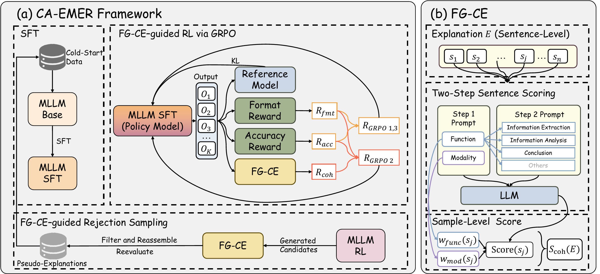

Evaluating and Improving Explanation Coherence for Multimodal Emotion Recognition
Abstract. Multimodal Large Language Models (MLLMs) achieve strong performance in Multimodal Emotion Recognition (MER), yet accurate predictions alone do not guarantee genuine emotional understanding. Explainable MER (EMER) extends MER by requiring natural language explanations, but such explanations are often redundant or inconsistent with predicted emotions, revealing deficiencies in emotional reasoning coherence. A key challenge is that coherence remains poorly defined and difficult to optimize systematically. In this work, we propose the Fine-Grained Coherence Evaluator (FG-CE), which opera- tionalizes explanation coherence as a measurable and optimizable signal. FG-CE decomposes explanations into sentence-level units and identifies their functional role, modality grounding, and emotional consistency, producing interpretable coherence scores. Building upon FG-CE, we introduce Coherence-Aware EMER (CA-EMER), a unified optimization framework that integrates FG-CE into reinforcement learning and evaluator-guided re- jection sampling, enabling coherence-aware self-improvement without additional human annotations. Experiments demonstrate that CA-EMER improves emotional explanation coherence while preserving emotion recognition performance and generalization.
ContentsFramework Overview

Figure 1. Overview of CA-EMER and FG-CE. (a) Major training stages: cold-start SFT, two-phase GRPO, FG-CE–guided rejection sampling, and a final GRPO stage identical to Phase 1, which is omitted for simplicity in the diagram. (b) Computation of the FG-CE score.
We propose CA-EMER, a training framework that explicitly optimizes explanation coherence in MLLMs for EMER while maintaining reliable emotion recognition. CA-EMER consists of four stages: (1) supervised fine-tuning (SFT) on human-supervised cold-start data to acquire basic emotion recognition and generate fluent explanations, establishing a foundation for coherence optimization; (2) FG-CE–guided Reinforcement Learning (RL), which follows an easy-to-hard strategy--first enforcing format and prediction correctness, then progressively aligning perception, reasoning, and emotion prediction via coherence reward; (3) FG-CE–guided Rejection Sampling Fine-Tuning (RFT), which filters and reconstructs high-coherence explanations to enable self-improvement in coherent emotional reasoning; and (4) a final RL stage, which reuses the same GRPO objective as the initial format-and-accuracy phase in (2), to restore and refine recognition performance. Overall, CA-EMER treats explanation coherence as an explicit optimization objective rather than an implicit byproduct of training. The pipeline is illustrated in Figure 1.
Demos
We demonstrate results of HumanOmni-7B trained under our proposed CA-EMER framework and the official checkpoint of ERV-7B.
Demo 01
Ground Truth Emotion: disappointment
CA-EMER-HumanOmni-7B
Prediction: disappointment
Explanation:
In the video, the female character's facial expression appears somewhat distressed, with a slightly downturned mouth and a gaze that seems to be focusing on her thoughts. Her hands are placed on her head, which may indicate that she is feeling headachy or experiencing some kind of pressure. In the audio, the character sighs at the end of the speech, expressing feelings of helplessness and frustration.
ERV-7B
Prediction: sadness
Explanation:
In the video, the screen shows a female character. In the video, she looks down with a somewhat melancholic expression on her face. Her eyes are not looking directly at the camera, suggesting that she is thinking or reminiscing about something. She touches her head with her hand, seemingly gently combing her hair. This action may indicate that she is feeling upset or distressed, as she may be reminding herself not to think too much or is expressing her pain. In the audio, the character's tone is low and conveys a sense of sadness and vulnerability. In the text, it is impossible to determine the emotional state based on the subtitle content.
Demo 02
Ground Truth Emotion: happiness
CA-EMER-HumanOmni-7B
Prediction: happiness
Explanation:
In the video, we see a young girl with a pink backpack, standing in an outdoor environment that appears to be a street. In the video, her facial expression seems relaxed, with a slight upward curve at the corners of her mouth, suggesting a smile. Her gaze is direct, seemingly focused on observing or contemplating something. Overall, she appears to be in a relatively calm state. In the audio, footsteps and rustling sounds of leaves can be heard in the background, adding a sense of tranquility to the scene.
ERV-7B
Prediction: happiness
Explanation:
In the video, we see a young girl standing outdoors. Her facial expression is relatively calm, with a slight upward curve at the corners of her mouth, possibly indicating a gentle or happy emotion. She seems to be in a relaxed state, without any obvious signs of nervousness or excitement. In the audio, it is impossible to determine the character's emotional state. In the text, it is impossible to judge the emotional state based on the subtitle content.
Demo 03
Ground Truth Emotion: neutral
CA-EMER-HumanOmni-7B
Prediction: neutral
Explanation:
In the video, we see a male character with a neutral facial expression, wide open eyes, and slightly open mouth, seemingly speaking or explaining something seriously. In the audio, the tone and intonation of the character are relatively calm. In the text, the subtitle reads: "I'm working on it, I think I got it. If I come back, it's likely the serial killer. " From the video clues of the male character's neutral facial expression, wide open eyes, and slightly open mouth, as well as the audio clue of the character's calm tone and intonation, we can infer that this sentence may carry a serious and thoughtful tone. The male character may be discussing a difficult problem or explaining a certain topic. Therefore, this sentence may be the male character expressing his thoughts or plans regarding a certain issue.
ERV-7B
Prediction: neutral
Explanation:
In the video, we see a male character with his back to a man whose face is not shown. The male character's facial expression appears serious, as if he is attentively observing or listening to the other person. In the audio, the voice is calm and the tone is neutral. In the text, the subtitle reads: "I think I got it, when I come back, it will be the serial killer." This sentence may be spoken by the male character to the man whose face is not shown. Based on the serious facial expression of the male character in the video clues and the calm voice and neutral tone in the audio clues, we can infer that this sentence may carry a serious or focused tone. Therefore, this sentence may be the male character's response to the other person, indicating that he has understood a certain topic or clue, and this clue is related to the serial killer. Overall, this sentence shows the male character's seriousness and focus.
Demo 04
Ground Truth Emotion: sadness
CA-EMER-HumanOmni-7B
Prediction: sadness
Explanation:
In the video, the female character's facial expression appears somewhat sad and tearful. Her eyes seem to be red and moist, as if she has been crying. In the audio, the tone is low and conveys a sense of sadness and vulnerability. In the text, the subtitle reads, "You are lying, I've been had. " This sentence may express the woman's dissatisfaction or disappointment with someone or something. Based on the woman's sad and tearful facial expression in the video clues, as well as the low tone and conveyed sense of sadness and vulnerability in the audio clues, we can infer that this sentence may carry a sense of sadness and disappointment. The woman may feel disappointed and hurt by someone's deception or lies, which aligns with the overall display of sadness and vulnerability by the woman.
ERV-7B
Prediction: sadness
Explanation:
In the video, the screen shows a woman in an indoor environment with bookshelves and books in the background. At the beginning of the video, her facial expression appears somewhat sad. In the following scenes, she turns her head and looks down, crying while seemingly speaking or thinking about something, with obvious movements of her shoulders. In the audio, the tone is low and conveys a sense of sadness and vulnerability. In the text, the subtitle says, "You're lying, I'm here." This sentence may be spoken by the woman to someone. Based on the woman's sad facial expression and crying actions in the video clues, as well as the description of a low and vulnerable tone in the audio clues, we can infer that this sentence may carry a sense of disappointment, frustration, or sadness. The woman may feel deceived or disappointed, expressing her presence through crying to express her emotions.
Demo 05
Ground Truth Emotion: fear
CA-EMER-HumanOmni-7B
Prediction: fear
Explanation:
In the video, the male character's facial expression appears somewhat scared. His mouth is slightly open and his eyes are wide open, looking towards the top of the elevator. It seems that something or someone above him has caused him to feel scared.
ERV-7B
Prediction: fear
Explanation:
In the video, the screen shows a male character in an indoor setting. In the video, his mouth is slightly upturned, indicating a smile. His gaze is downward, with his right hand raised to the level of his head, seemingly touching or holding onto something inside the elevator. The specific action needs to be analyzed in conjunction with additional context. Overall, he appears to be in a relatively calm state. In the audio, the character's voice sounds scared, suggesting that the character is experiencing some kind of fear. In the text, it is impossible to determine the emotional state based on the subtitle content.
Demo 06
Ground Truth Emotion: surprise
CA-EMER-HumanOmni-7B
Prediction: fear
Explanation:
In the video, the female character's eyes are wide open and her mouth is slightly open, showing a scared expression. She seems to be seeing or experiencing something scary.
ERV-7B
Prediction: surprise
Explanation:
In the video, the screen shows a young girl in an indoor environment. In the video, her eyes are wide open and her mouth is slightly open, showing a surprised facial expression. She seems to be looking at something or someone outside the frame, which may have surprised her. In the audio, it is impossible to determine the character's emotional state. In the text, it is impossible to judge the emotional state based on the subtitle content.